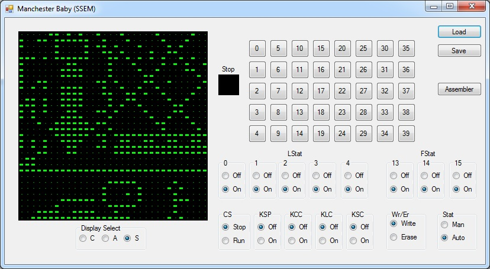
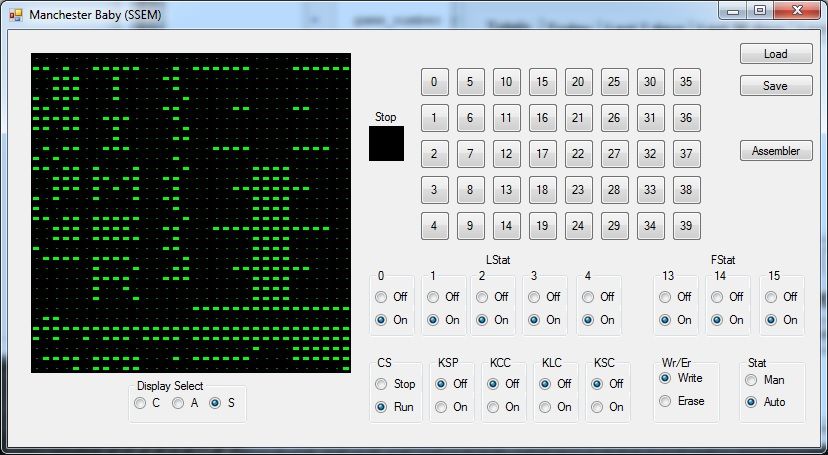
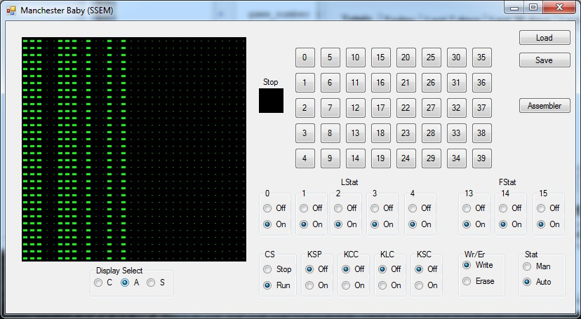
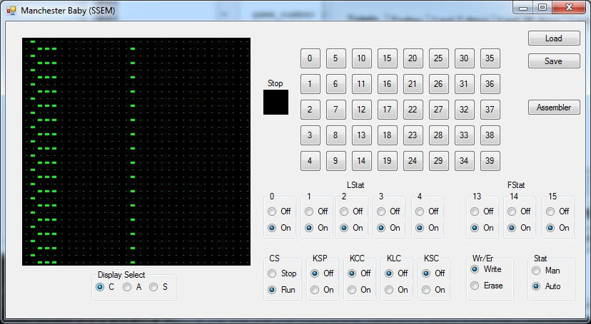
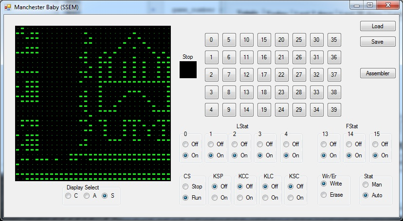
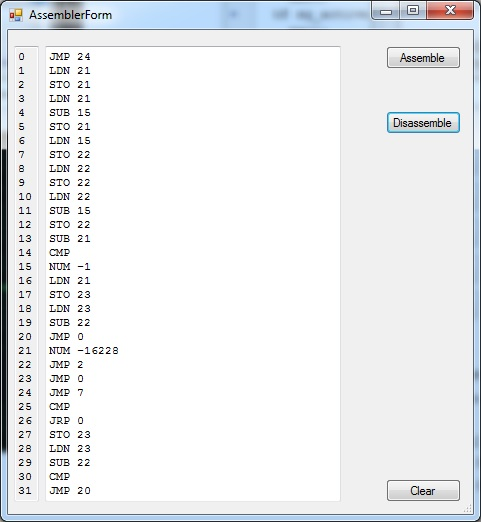

The Small-Scale Experimental Machine (SSEM), also known as the Manchester
Baby is widely considered to be the world's first stored program computer.
Unlike The ENIAC or Z3 which used some form of mechanical storage, the
SSEM stored programs and data electronically and could be changed during
the course of a program run. SSEM ran its first program on June 21, 1948.
The SSEM was not intended to be a full blown computer, but rather a
testbed for technologies that would be used to build the Manchester Mark I.
The SSEM used the Williams tube as its means of storage. The Williams
tube was essentially a CRT with a detection grid placed in front of it.
Bits of information were stored as dots on the screen that could then be
detected by the grid. A feedback circuit would read the bits off the
detection grid and were used to refresh the dots on the screen, keeping
them in memory. The SSEM memory consisted of 32 words of 32 bits each.
The SSEM understood 7 different instructions and despite this small
instruction set and only 32 words of storage many interesting program had
been written for it.
Note: This program requires .net 4.0 framework to be installed
www.computer50.org Some additional information and some programs for the SSEM can be found here.





